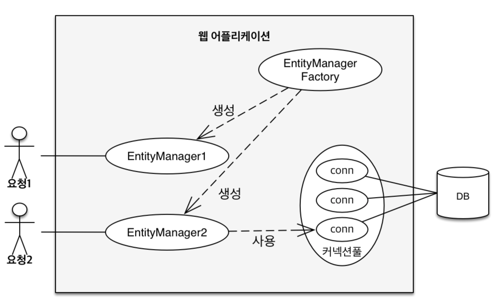
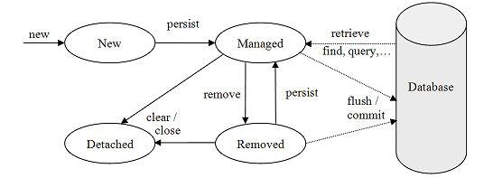

엔티티 매니저는 엔티티를 저장하고, 수정하고, 삭제하고, 조회하는 등 엔티티와 관련된 모든 일을 처리한다.
⇒ 엔티티를 관리하는 관리자
1. 엔티티 매니저 팩토리와 엔티티 매니저
// Factory, 비용이 많이듬
EntityManagerFactory emf = Persistence.createEntityManagerFactory("jpabook");
// Factory에서 엔티티 매니저 생성, 비용이 거의 안듬
EntityManager em = emf.createEntityManager();
EntityManagerFactory 는 thread-safe하지만, EntityManager는 thread-safe하지 않음
김영한_자바 ORM 표준 JPA 프로그래밍
따라서 엔티티 매니저는 여러 스레드가 동시에 접근하면 동시성 문제가 발생하므로 스레드 간에 절대 공유하면 안된다.
EntityManager는 보통 트랜잭션을 시작할 때 커넥션을 획득한다.
JPA구현체들은 EntityManagerFactory를 생성할 때 커넥션풀도 생성한다. (persistence.xml에 db정보 존재)
2. 영속성 컨텍스트
영속성 컨텍스트(persistence context) ⇒ 엔티티를 영구 저장하는 환경 엔티티 매니저로 엔티티를 저장하거나 조회하면 엔티티 매니저는 영속성 컨텍스트에 엔티티를 보관하고 관리
em.persist(member);
엔티티 매니저를 사용해서 회원 엔티티를 영속성 컨텍스트에 저장한다라고 표현할 수 있다. 그 저장하는 메소드가 persist()이다.
3. 엔티티의 생명주기
비영속(new/transient) : 영속성 컨텍스트와 전혀 관련없는 상태
영속(managed) : 영속성 컨텍스트에 저장된 상태
준영속(detached) : 영속성 컨텍스트에 저장되었다가 분리된 상태
삭제(removed) : 삭제된 상태 
비영속
엔티티 객체를 생성 했으나, 저장하지 않은 상태 (순수한 객체 상태) (아직 영속성 컨텍스트에 존재하지 않음, 비영속 상태)
// 객체를 생성한 상태(비영속)
Member member = new Member();
member.setId("member1");
member.setUsername("회원1");
영속
엔티티 매니저를 통해서 엔티티를 영속성 컨텍스트에 저장한 상태 (관리되는 상태) ⇒ 컨텍스트가 관리하는 엔티티를 영속 상태라고 함
// 객체를 저장한 상태(영속)
em.persist(member);
준영속
영속성 컨텍스트가 관리하던 영속 상태의 엔티티를 영속성 컨텍스트가 관리하지 않으면 준영속 상태가 된다.
em.detach() : 엔티티를 준영속 상태로 만듬
em.close() : 영속성 컨텍스트 닫음
em.clear() : 양속성 컨텍스트 초기화
위의 세가지 메소드를 호출하면 영속 상태의 엔티티는 준영속 상태가 된다.
// 회원 엔티티를 영속성 컨텍스트에서 분리, 준영속 상태
em.detach(member);